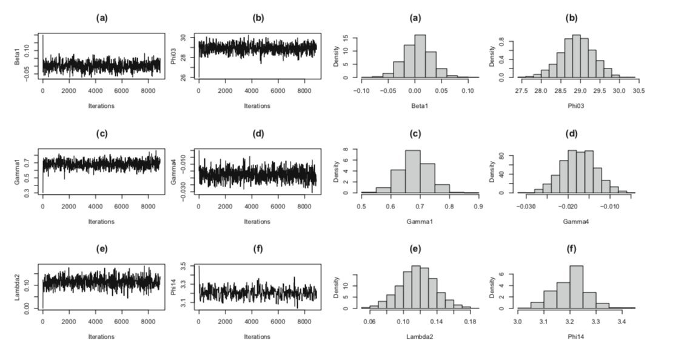

Paper 10 Bayesian Joint Semiparametric Mean-Covariance Modelling for Longitudinal Data
Liu, Zhang, and Chen (2018)
10.1 Abstract
In this paper, a Bayesian approach is proposed for modelling the mean and covariance simultaneously by using semiparametric models and the modified Cholesky decomposition. Using a generalized prior to avoid the knots selection while using B-spline to approximate the nonlinear part. And using Metropolis-Hastings algorithm for computations.
10.2 Introduction
Based on Leng,Zhang,Pan那篇, 基本方法还是来源于 Cepeda and Gamerman (2000) . 然后semi-parametric的部分是用了B-spline。Knots的选取使用一个generalized prior代替了。
10.3 Models and Bayesian Estimation Methods
10.3.1 Models
Suppose \(y_{i j} | x_{i j}, t_{i j} \sim N\left(\mu_{i j}, \Sigma_{i}\right)\), with MCD \(\Phi_{i} \Sigma_{i} \Phi_{i}^{\prime}=D_{i}\). Have autoregressive coefficients \(\phi_{ijk}\) is negative entry of \(\Phi_i\)
\[ y_{i j}=\mu_{i j}+\sum_{k=1}^{j-1} \phi_{i j k}\left(y_{i k}-\mu_{i k}\right)+\epsilon_{i j} \]
And the slightly different 3 model
\[ \mu_{i j}=x_{i j}^{\prime} \beta+f_{0}\left(t_{i j}\right), \quad \phi_{i j k}=w_{i j k}^{\prime} \gamma, \quad \log \left(\sigma_{i j}^{2}\right)=z_{i j}^{\prime} \lambda+f_{1}\left(t_{i j}\right) \]
\(\beta\),\(\gamma\),\(\lambda\)是线性部分，然后\(f_0(\cdot)\) 和\(f_1(\cdot)\) 是smooth function。
10.3.2 Smoothing Splines and Priors
\(f_0\) and \(f_1\) 用regression splines来决定。假设\(f_0\)和\(f_1\)有同样的smoothness的形式，令\(0=s_{0}<s_{1}<\cdots<s_{k_{n}}<s_{k_{n}+1}=1\) be a partition of the interval \([0,1]\). \(s_i\) be the interval knots, then we have \(L=k_n+l\) normalized B-spline basis function of order \(l\) that form a basis for the linear spline space, the nonlinear function f can be linearized as \[ f(t)=\sum_{l=1}^{L} \theta_{l} b_{l}(t) \] Where \(B(t)=\left(b_{1}(t), \ldots, b_{L}(t)\right)\) are the B-spline basis functions and \(\psi=\left(\theta_{1}, \cdots, \theta_{L}\right)^{\prime}\) are the associated coefficients.
Follow the Bayesian p-spline method by Lang and Brezger, place a first-order random walk prior distribution on the coefficients, so that
\[ p\left(\theta_{1}\right) \propto 1, \quad \theta_{l}=\theta_{l-1}+e_{l}, \quad l=2, \ldots, L ; \quad e_{2}, \ldots, e_{L} | \tau \stackrel{i i d}{\sim} N\left(0, \tau^{2}\right) \]
Here the random walk variance \(\tau^2\) can be interpreted as a smoothing parameter. Thus, the resulting conditional prior density for \(\psi\) satisfies \[ p(\psi | \tau) \propto \exp \left(-\frac{1}{2 \tau^{2}} \psi^{\prime} \Omega \psi\right) \] with a banded penalty matrix
这个random walk prior感觉很有意思诶，不知道为啥要那么弄，但是感觉很强的样子，ar(1)或者ma(1)的结构，然后最后条件分布是一个正态
\[ \Omega=\left( \begin{array}{cccccc}{1} & {-1} & {0} & {\cdots} & {0} & {0} \\ {-1} & {2} & {-1} & {\cdots} & {0} & {0} \\ {0} & {-1} & {2} & {\cdots} & {0} & {0} \\ {\vdots} & {\vdots} & {\vdots} & {\ddots} & {\vdots} & {\vdots} \\ {0} & {0} & {0} & {\cdots} & {2} & {-1} \\ {0} & {0} & {0} & {\cdots} & {-1} & {1}\end{array}\right) \]
This prior structure is a Bayesian interpretation of the work of Eilers and Marx(1996) which constructed a different penalty from the ranodm walk prior and adopted a penalized maximum likelihood approach.
More in Lang and Brezger(2004).
对于两个非参数的部分\(f_{k}(t) \quad(k=0,1)\) 可以写成线性形式\(f_{k}\left(t_{i j}\right)=B_{k}\left(t_{i j}\right) \psi_{k}\) at time \(t_{ij}\). 设\(n_i\times L\)矩阵 \(B_{k i}=\left(B_{k}^{\prime}\left(t_{i 1}\right), \ldots, B_{k}^{\prime}\left(t_{i n_{i}}\right)\right)^{\prime}\) and \(f_{k}\left(t_{i}\right)=\left(f_{k}\left(t_{i} 1\right), \ldots, f_{k}\left(t_{i n_{i}}\right)\right)^{\prime}\), then \(f_{k}\left(t_{i}\right)=B_{k i} \psi_{k}\) for k=0,1. The prior density of \(\psi_k\) is
\[ p\left(\psi_{k} | \tau_{k}\right) \propto \exp \left(-\frac{1}{2 \tau_{k}^{2}} \psi_{k}^{\prime} \Omega \psi_{k}\right), \quad k=0,1 \] .
For fully Bayesian inference, the unknown variance parameters \(\tau_k\) can be consideredas random and assigned an inverse gamma hyper-prior, namely \(\tau^2_k\sim\Gamma^{-1}(a_k,b_k)\) with some known constants \(a_k\) and \(b_k\). Also, a vague prior can be imposed on \(\tau_k\). Smaller \(\tau_k\) means larger penalty on parameters and meanwhile we assigned large knumber of knos. So a smaller \(\tau_k\) is preferred to get the efficient estimation of nonlinear function.
Conjugate prior for \(\beta\),\(\gamma\),\(\lambda\) with easily implement MCMC, that is, \[ \beta \sim N_{p}\left(\beta_{0}, \Delta_{0}\right), \quad \gamma \sim N_{q}\left(\gamma_{0}, \Gamma_{0}\right), \quad \lambda \sim N_{d}\left(\lambda_{0}, \Lambda_{0}\right) \]
.
10.4 MCMC Sampling
\[ \pi\left(\beta | Y, X, f_{0}, \Sigma\right)=N_{p}\left(\Delta_{1}^{-1}\left(\Delta_{0}^{-1} \beta_{0}+\sum_{i=1}^{m} X_{i}^{\prime} \Sigma_{i}^{-1}\left(Y_{i}-f_{0}\left(t_{i}\right)\right)\right), \Delta_{1}^{-1}\right) \] with \(\Delta_{1}=\Delta_{0}^{-1}+\sum_{i=1}^{m} X_{i}^{\prime} \Sigma_{i}^{-1} X_{i}\).
The posterior full conditional distribution for B-spline coefficient \(\psi_0\) is \[ \pi\left(\psi_{0} | \beta, \gamma, \lambda, f_{1}\right)=N_{L}\left(P_{0}^{-1} \sum_{i=1}^{m} B_{0 i}^{\prime} \Sigma_{i}^{-1}\left(Y_{i}-X_{i} \beta\right), P_{0}^{-1}\right) \] where \(P_{0}=\sum_{i=1}^{m} B_{0 i}^{\prime} \Sigma_{i}^{-1} B_{0 i}+\Omega / \tau_{0}^{2}\).
Let \(W_{i}=\left(0,\left(y_{i 1}-\mu_{i 1}\right) w_{i 21}, \ldots, \sum_{k=1}^{n_{i}-1}\left(y_{i k}-\mu_{i k}\right) w_{i j k}\right)^{\prime}\), then we have \[ Y_{i}-\mu_{i}=W_{i} \gamma+\epsilon_{i}, \quad i=1, \ldots, m \] > 也就是和zp的操作一致。
\[ \pi\left(\gamma | Y, X, \beta, \lambda, f_{0}, f_{1}\right)=N_{q}\left(\Gamma_{1}^{-1}\left(\Gamma_{0}^{-1} \gamma_{0}+\sum_{i=1}^{m} W_{i}^{\prime} D_{i}^{-1}\left(Y_{i}-\mu_{i}\right)\right), \Gamma_{1}^{-1}\right) \] where \(\Gamma_{1}=\Gamma_{0}^{-1}+\sum_{i=1}^{m} W_{i}^{\prime} D_{i}^{-1} W_{i}\).
However, unlike the full conditional distributions of \(\beta\) and \(\gamma\), the full conditional distributions of \(\lambda\) and \(\psi_1\) are given by
\[ \begin{aligned} \pi\left(\lambda | \beta, \gamma, f_{0}, f_{1}\right) \propto \prod_{i=1}^{m}\left|D_{i}\right|^{-1 / 2} \exp \left\{-\frac{1}{2} \sum_{i=1}^{m}\left(y_{i}-\mu_{i}-W_{i} \gamma\right)^{\prime} D_{i}^{-1}\left(y_{i}-\mu_{i}-W_{i} \gamma\right)\right.\\-\frac{1}{2}\left(\lambda-\lambda_{0}\right)^{\prime} \Lambda_{0}^{-1}\left(\lambda-\lambda_{0}\right) \} \end{aligned} \] and \[ \begin{aligned} \pi\left(\psi_{1} | \beta, \gamma, \lambda, f_{0}\right) \propto \prod_{i=1}^{m}\left|D_{i}\right|^{-1 / 2} \exp \left\{-\frac{1}{2} \sum_{i=1}^{m}\left(y_{i}-\mu_{i}-W_{i} \gamma\right)^{\prime} D_{i}^{-1}\left(y_{i}-\mu_{i}-W_{i} \gamma\right)\right.\\ -\frac{1}{2 \tau_{1}^{2}} \psi_{1}^{\prime} \Omega \psi_{1} \} \end{aligned} \]
According to the standard Bayesian theory, we have
These final two full conditional posterior ditributions are analytically intractable, then we use Metropolis-Hastings instead. Empirical evidence suggests that the more it interrelates with the objective distribution the faster it converges. This paper use the methodologyproposed by [Gamerman,D. 1997 Sampling from the posterior distribution in generalized linear mixed models.] Using fisher scoring algorithm to construct suitable proposals as those of Cepeda and Gamerman. This algorithm requires working variables to approximate transformation of the observations aroune the current parameter estimates. At the step of \(\lambda\) iteration, \(\beta,\gamma\) and \(f_k\) are fixed at their current values \(\beta^{(c)}, \lambda^{(c)} \text { and } f_{k}^{(c)}\), given the working observation model is \[ h_{i j}=\left(y_{i j}-x_{i j}^{\prime} \beta^{(c)}-f_{0}^{(c)}-w_{i}^{(c)} \gamma^{(c)}\right)^{2} \sim \sigma_{i j}^{2} \chi_{1}^{2}, \quad i=1, \ldots, m ; j=1, \ldots, n_{i} \] where \(w_i^{(c)}\) is the ith row of \(W_i^{(c)}\). Therefore, the observation \(h_{ij}\) has respective mean \(E h_{i j}=\sigma_{i j}^{2}\) and variance \(\operatorname{Var}\left(h_{i j}\right)=2 \sigma_{i j}^{4}\), and is related to the regression parameter \(\lambda\) through \(\log \left(E h_{i j}\right)=z_{i j}^{\prime} \lambda+f_{1}\left(t_{i j}\right)\). By Taylor expansion,
\[ \begin{aligned} \log \left(h_{i j}\right) & \approx \log \left(E h_{i j}\right)+\left(h_{i j}-E h_{i j}\right)\left(\log \left(E h_{i i j}\right)\right)^{\prime} \\ &=\log \left(\sigma_{i j}^{2}\right)+\frac{h_{i j}}{\sigma_{i j}^{2}}-1 \sim N\left(z_{i j}^{\prime} \lambda+f_{1}\left(t_{i j}\right), 2\right) \end{aligned} \] Similar, we can get the vector of appropriate working observation \(\tilde Y=\left(\tilde{y}_{11}, \ldots, \tilde{y}_{m n_{i}}\right)\) with \[ \begin{array}{c}{\tilde{y}_{i j}=z_{i j}^{\prime} \lambda^{(c)}+f_{1}^{(c)}\left(t_{i j}\right)+\frac{\left(y_{i j}-x_{i j}^{\prime} \beta^{(c)}-f_{0}^{(c)}-w_{i}^{(c)} \gamma^{(c)}\right)^{2}}{\exp \left(z_{i j}^{\prime} \lambda^{(c)}+f_{1}^{(c)}\left(t_{i j}\right)\right)}-1} \\ {i=1, \ldots, m ; j=1, \ldots, n_{i} ;}\end{array} \]
Therefore, the normal transition kernel for \(\lambda\) based on Fisher scoring methods is obtained as \[ q_{\lambda}\left(\lambda^{(c)}, \lambda^{(n)}\right)=N\left(g_{b}, G_{b}\right) \] where \(\lambda^{(n)}\) is the next possible value, and \[ g_{b}=G_{b}\left[\Lambda_{0}^{-1} \lambda_{0}+2^{-1} \sum_{i=1}^{m} Z_{i}^{\prime}\left(\tilde{Y}_{i}-f_{1}^{(c)}\left(t_{i}\right)\right)\right], \quad G_{b}=\left(\Lambda_{0}^{-1}+2^{-1} \sum_{i=1}^{m} Z_{i}^{\prime} Z_{i}\right)^{-1} \]
Similarly, the normal transition kernel for \(\psi_1\) can be obtained as \[ q_{\psi_{1}}\left(\psi_{1}^{(c)}, \psi_{1}^{(n)}\right)=N\left(v_{b}, V_{b}\right) \]
where \(\psi_1^{(n)}\) is the next possible value, and \[ v_{b}=2^{-1} V_{b} \sum_{i=1}^{m} B_{1 i}^{\prime}\left(\tilde{Y}_{i}-Z_{i} \lambda^{(c)}\right), \quad V_{b}=\left(\tau_{1}^{-2} \Omega+2^{-1} \sum_{i=1}^{m} B_{1 i}^{\prime} B_{1 i}\right)^{-1} \]
Note that instead of sampling all the parameters in \(\theta=\left(\beta, \gamma, \lambda, \psi_{0}, \psi_{1}\right)\) at the same time, we should use the conditional independent structure of the model to divided the into blocks and draw samples step by step. Specifically, it is advisable to sample \(\beta,\gamma,\psi_0\) from their full posterior conditional distributions directly, and draw sample of \(\lambda,\phi_1\) using the Metropolis-Hastings method. The algorithm could be described as follows:
- Start with \(\beta^{(0)}, \gamma^{(0)}, \lambda^{(0)}, \psi_{0}^{(0)}, \psi_{1}^{(0)}\)
- Generate new \(\beta^{(j)}\)
- Based on \(\beta^{(j)}\) generate the new value \(\psi_0^{(j)}\) and update.
- Basedon \(\beta^{(j)}\), \(\psi_0^{(j)}\),generate the new value \(\gamma^{(j)}\) and update
- Based on step2-4, propose a new value \(\lambda^*\) generated from transition kernel. Calculate the acceptance probability of the movement \(\alpha_{j}\left(\lambda^{(j-1)}, \lambda^{*}\right)\). If the movement is accepted, then \(\lambda^{(j)}=\lambda^{*}\), otherwise \(\lambda^{(j)}=\lambda^{(j-1)}\).
- Based step 2-5, propose a new value \(\psi_1^*\), and follow the MH algorithm,update \(\psi_1^{(j)}\)
- Next iteration j+1.
The acceptance probability mentioned in step 5 could be expressed as \[ \alpha_{j}\left(\lambda^{(j-1)}, \lambda^{*}\right)=\frac{\pi\left(\lambda^{*} | \lambda_{-}^{(j-1)}\right) q_{\lambda}\left(\lambda^{*}, \lambda^{(j-1)}\right)}{\pi\left(\lambda^{(j-1)} | \lambda_{-}^{(j-1)}\right) q_{\lambda}\left(\lambda^{(j-1)}, \lambda^{*}\right)} \]

从figure2来看，看来这种基于fishing score method的方法收敛情况意外的好？ 而且这让人感觉再推一步就到 Hamiltonian Monte Carlo 的感觉了，毕竟都用了一二阶导数的信息来着。。。需要再把这个proposal的形式推一下
总结一下，需要注意的有几点。1，Bayes下的B-spline，也就是P-spline那篇值得推一下。以及其中包括的B spline 参数的先验那个 first order random walk prior和最后得到的那个类似于Normal的形式。2，对于MH算法，那个基于Proposed by Gamerman 的基于Fisher scoring algorithm的构造proposal的方法。-3，文中写出注意的那个算法好像没啥新鲜的，就是一个一个抽，因为Gibbs。而因为之前几个参数有解析分布，可以直接抽，所以号称“block”抽，其实是一样的，还是顺着抽的思路，新\(\beta\)，基于\(\beta\)抽\(\psi_0\),基于\(\beta,\psi_0\)抽\(\gamma\)….. 2+,那个proposal的效果意外的好。1+,选knots那块咋搞定的还没懂。
References
Liu, Meimei, Weiping Zhang, and Yu Chen. 2018. “Bayesian Joint Semiparametric MeanCovariance Modeling for Longitudinal Data.” Communications in Mathematics and Statistics, July.
Cepeda, Edilberto, and Dani Gamerman. 2000. “Bayesian modeling of variance heterogeneity in normal regression models.” Brazilian Journal of Probability and Statistics 14 (2): 207–21.